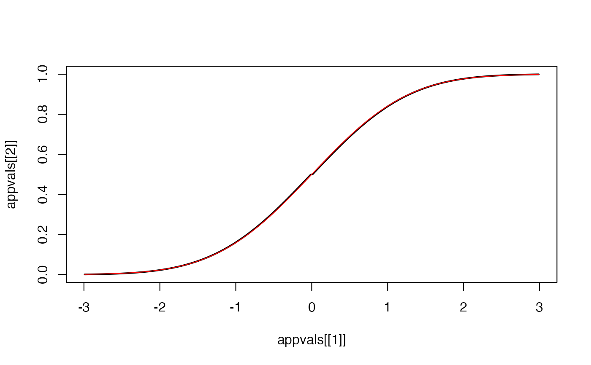
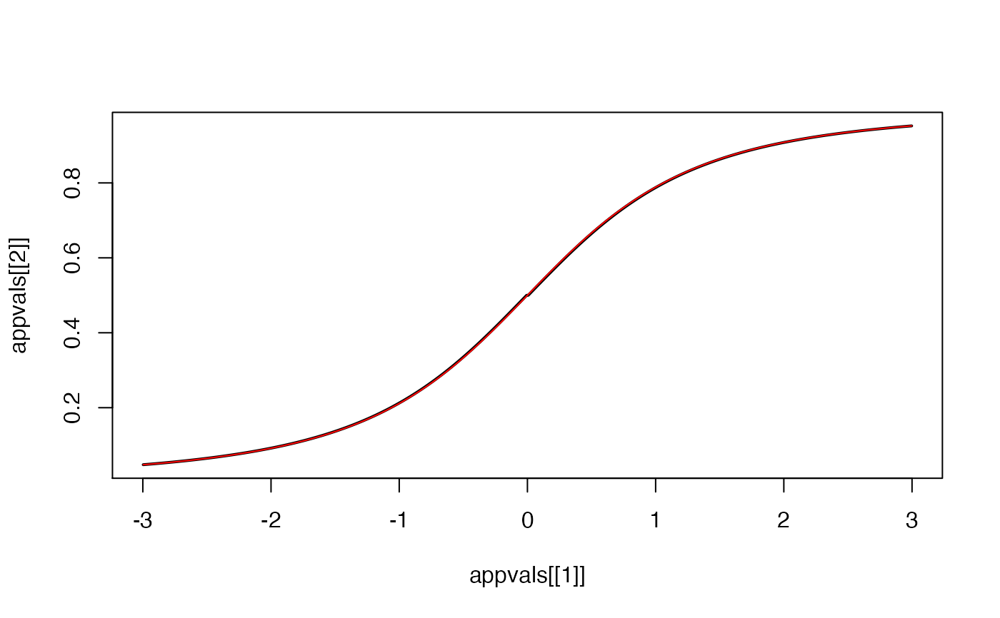

ApproxCDF approximates the cdf F when given a characteristic function phi of a centered random variable, using the formula found in Waller (1995) with
original reference to Bohman (1974). The procedure can be numerically unstable in the tails of the distribution, so
only the center of the approximation is returned. Some simplifying approximations explained in "Numerical inversion of laplace transform and characteristic function"
are used. Note that phi should have a finite first moment.
ApproxCDF(phi, H = 2000, eta = 0.5, xlim = NULL, smoothe = FALSE)
| phi | the characteristic function to be inverted |
|---|---|
| H | A total of 2H+1 values of F are approximated. By default H of these values are returned unless an interval is provided. |
| eta | A scaling paramter. By default equidistant points in the interval (-2*phi/eta,2*phi/(eta)) are approximated. |
| xlim | (optional) limits on the x-axis |
| smoothe | (optional) Should smoothing be used? If TRUE default weights of the function |
phi <- function(t) exp(-t^2/2) appvals=ApproxCDF(phi,H=1000,eta=0.5,xlim=c(-3,3)) plot(appvals[[1]],appvals[[2]],type="l",lwd=2)phi <- function(t) sqrt(2)*abs(t)*besselK(sqrt(2)*abs(t),1) appvals=ApproxCDF(phi,H=10000,eta=0.1,xlim=c(-3,3)) plot(appvals[[1]],appvals[[2]],type="l",lwd=2)